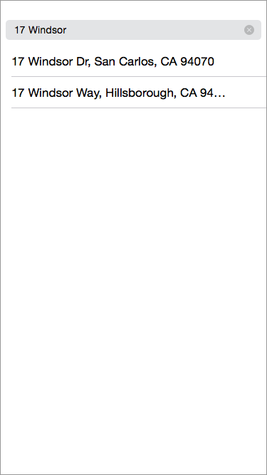
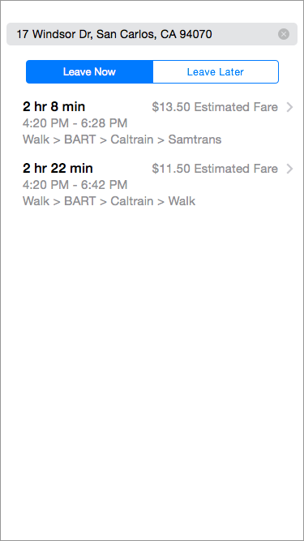
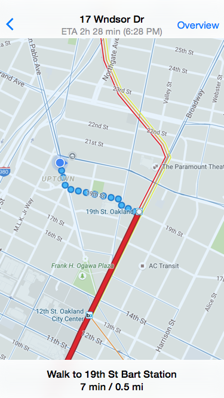
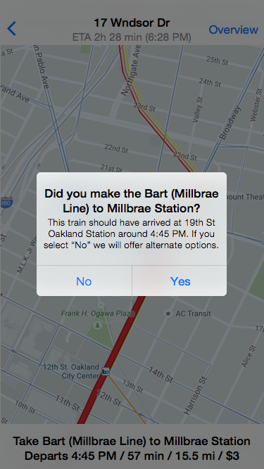

My Interpretation of the Challenge:
Design an everyday, affordable solution for public transit that is inspired by the simplicity and ease-of-use of Uber, that is used primarily locally but can also work for destinations beyond your metropolitan area.
Inspiration: Uber, Google Maps, Nextbus, Transporter
Why is Uber amazing?
Push a button and your own private ride is moments away from picking you up. By optimizing for the quickest use case (starting off on the previously used transport option and without a destination or fare estimate predetermined) you can be on your way quickly. If you’re more price sensitive, you can perform a fare estimate which will also provide you with extra functionality like shareable ETA.
What are the existing app solutions for public transit?
Google Maps does a good job, and always has, of providing static directions combining multiple public transit options for a given origin and destination. However, one gap in its experience is its reliance on *scheduled* transit times, and often does not tap into live transit times. Other apps like Transporter, and webapps like NextBus, provide live transit times, but for limited agencies. Google Maps directions are also pretty static - relying on the user to follow steps manually rather than “tracking you” and smartly telling you the next step, similar to turn-by-turn driving directions.
How might one design a public transit app that combines the best of Uber and public transit directions experiences?
The way I see it, friction in setting up a routing via public transport routing can be reduced vs. what Google Maps currently provides. Lessons learned from the elegance of Uber and the shortcomings of Google Maps can be applied in the following ways:
- Optimize for quickest use case (departing current location now) but provide for alternate cases (departing elsewhere and/or at a later time)
- Provide guided or semi-guided navigation tracking en route, ensuring the user has options in the event of missing steps
- Provide minimal options that are the best combination of price and schedule, versus overwhelming the user with many options
Design Approach
As a bay area native, I presently live in Oakland and mainly commmuted to past jobs in San Francisco. I have also always had a car since I like to go on local and regional adventures and have family in the area. When traveling within California, I drive to everywhere I go in Northern California, and evenly split Southern California trips between driving and air travel, though I have done rail/bus in the past.
I thought about how a bay area resident like myself might get by without a car, and drew up the local and regional transportation options.
I boiled my options down to these kinds of transport:
- City Bus (Muni in San Francisco, AC transit in East Bay, Samtrans on Peninsula, VTA in South Bay)
- City Rail (BART, Caltrain, MUNI Metro)
- Ferries
- Regional Bus (Greyhound, Megabus, etc.)
- Regional Rail (Amtrak)
I then thought about the pros and cons of Uber:
- You immediately see on a map the closest uber options by distance and time near you
- There are very few steps to hail an uber.
- Pricing info (estimates) are there if you need it
- HOWEVER, it's very expensive for >30 min trips
Google Maps mobile apps are great at generating public transit routings, but:
- It doesn't do live transit times or map visuals like uber
- It doesn't have detailed pricing information.
- It leaves it up to you to re-route yourself if you miss connections.
Workflow of Proposed Solution
- Like Uber, the default screen shows you your current location and transportation options around you. Unlike Uber, you should be able to view multiple transit options nearby at once (toggling on/off their display from the map).
- If your origin point is not your current location, you can drag the map around to change it, like uber. Otherwise, you would proceed to entering your destination via the search bar at the top.
- Once you select one of the destinations from the type-ahead/auto-complete list, you would be presented with optimal schedule/price options to get you there via public transit, via multiple modes if applicable.
- Once you select a transit combination, you end up on a map screen with the first step of your guided transit journey. You can exit out of this or view the entire route overview, but by default it tracks your progress to the next waypoint. You can advance to the next instruction by paginating the step bar at the bottom of the screen. Once the app detects you passing the current waypoint, it would smartly detect this and ask you if you made it onto the next segment instruction.
- If you missed the current connection, the app would present you with alternative public transit routing options, helping you complete your journey in the best possible time.
Wireframe sketches:
Low Fidelity Mockups
Default Inactive Screen:
Enter Destination:

Select a Routing:

Example "Turn-by-Turn" transit steps:

En Route Double-Check:

High Fidelity Prototype
You can interact with high fidelity mockups through this InVision iFrame: